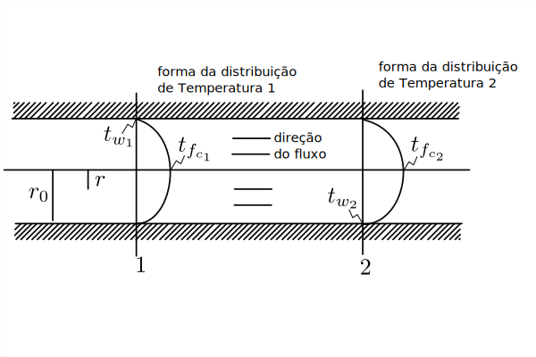

<!DOCTYPE html>
<html lang="en">
  <head>
    <meta charset="utf-8" />
    <meta name="viewport" content="width=device-width, initial-scale=1.0, maximum-scale=1.0, user-scalable=no" />

    <title></title>
    <link rel="stylesheet" href="dist/reveal.css" />
    <link rel="stylesheet" href="dist/theme/mattropolis.css" id="theme" />
    <link rel="stylesheet" href="plugin/highlight/monokai.css" />
	<link rel="stylesheet" href="css/layout.css" />
	<link rel="stylesheet" href="plugin/customcontrols/style.css">


    <script defer src="dist/fontawesome/all.min.js"></script>

	<script type="text/javascript">
		var forgetPop = true;
		function onPopState(event) {
			if(forgetPop){
				forgetPop = false;
			} else {
				parent.postMessage(event.target.location.href, "app://obsidian.md");
			}
        }
		window.onpopstate = onPopState;
		window.onmessage = event => {
			if(event.data == "reload"){
				window.document.location.reload();
			}
			forgetPop = true;
		}

		function fitElements(){
			const itemsToFit = document.getElementsByClassName('fitText');
			for (const item in itemsToFit) {
				if (Object.hasOwnProperty.call(itemsToFit, item)) {
					var element = itemsToFit[item];
					fitElement(element,1, 1000);
					element.classList.remove('fitText');
				}
			}
		}

		function fitElement(element, start, end){

			let size = (end + start) / 2;
			element.style.fontSize = `${size}px`;

			if(Math.abs(start - end) < 1){
				while(element.scrollHeight > element.offsetHeight){
					size--;
					element.style.fontSize = `${size}px`;
				}
				return;
			}

			if(element.scrollHeight > element.offsetHeight){
				fitElement(element, start, size);
			} else {
				fitElement(element, size, end);
			}		
		}


		document.onreadystatechange = () => {
			fitElements();
			if (document.readyState === 'complete') {
				if (window.location.href.indexOf("?export") != -1){
					parent.postMessage(event.target.location.href, "app://obsidian.md");
				}
				if (window.location.href.indexOf("print-pdf") != -1){
					let stateCheck = setInterval(() => {
						clearInterval(stateCheck);
						window.print();
					}, 250);
				}
			}
	};


        </script>
  </head>
  <body>
    <div class="reveal">
      <div class="slides"><section  data-markdown><script type="text/template"><!-- .slide: class="drop" -->
<div class="" style="position: absolute; left: 0px; top: 0px; height: 700px; width: 960px; min-height: 700px; display: flex; flex-direction: column; align-items: center; justify-content: center" absolute="true">

# Termohidráulica Aplicada a Projetos
## Análise Adimensional e Correlações de Convecção Forçada
</div></script></section><section  data-markdown><script type="text/template"><!-- .slide: class="drop" -->
<div class="" style="position: absolute; left: 0px; top: 0px; height: 700px; width: 960px; min-height: 700px; display: flex; flex-direction: column; align-items: center; justify-content: center" absolute="true">

# A Abordagem Adimensional
## Simplificando a Análise
A análise de transferência de calor é complexa.
Números adimensionais simplificam o problema,
agrupando variáveis de geometria, fluido e escoamento.
Eles permitem o uso de correlações empíricas universais,
fundamentais para o projeto de trocadores de calor e reatores.
</div></script></section><section  data-markdown><script type="text/template"><!-- .slide: class="drop" -->
<div class="" style="position: absolute; left: 0px; top: 0px; height: 700px; width: 960px; min-height: 700px; display: flex; flex-direction: column; align-items: center; justify-content: center" absolute="true">

# O Coeficiente de Convecção (`$h$`)
## Lei do Resfriamento de Newton
Define a taxa de calor entre uma parede e um fluido.
`$q^{\prime\prime} = h(t_w - t_f)$`
Onde:
* `$q^{\prime\prime}$`: Fluxo de calor (`$W/m^2$` ou `$Btu/hr \cdot ft^2$`)
* `$t_w$`: Temperatura da parede
* `$t_f$`: Temperatura de referência do fluido
</div></script></section><section  data-markdown><script type="text/template"><!-- .slide: class="drop" -->
<div class="" style="position: absolute; left: 0px; top: 0px; height: 700px; width: 960px; min-height: 700px; display: flex; flex-direction: column; align-items: center; justify-content: center" absolute="true">

# A Temperatura de Referência (`$t_f$`)
## Temperatura de Bulk ou Média Mista
`$t_f$` é a **temperatura de bulk**.
Representa a energia térmica média transportada pelo escoamento.
É a temperatura que o fluido teria se fosse completamente misturado.
Em escoamento turbulento, aproxima-se da temperatura no centro do duto.
<div align="center">


</div>
</div></script></section><section  data-markdown><script type="text/template"><!-- .slide: class="drop" -->
<div class="" style="position: absolute; left: 0px; top: 0px; height: 700px; width: 960px; min-height: 700px; display: flex; flex-direction: column; align-items: center; justify-content: center" absolute="true">

# Relação Adimensional Fundamental
## Convecção Forçada
O coeficiente `$h$` não é uma propriedade do fluido.
Ele é determinado por correlações empíricas.
A relação fundamental para convecção forçada é:
`$Nu = f(Re, Pr)$`
O Número de Nusselt é uma função dos Números de Reynolds e Prandtl.
</div></script></section><section  data-markdown><script type="text/template"><!-- .slide: class="drop" -->
<div class="" style="position: absolute; left: 0px; top: 0px; height: 700px; width: 960px; min-height: 700px; display: flex; flex-direction: column; align-items: center; justify-content: center" absolute="true">

# Número de Reynolds (`$Re$`)
## Previsão do Regime de Escoamento
`$Re = \frac{\rho V D_e}{\mu}$`
Mede a razão entre forças de inércia e forças viscosas.
* `$Re$` baixo: Escoamento **laminar** (suave, ordenado).
* `$Re$` alto: Escoamento **turbulento** (caótico, alta mistura).
Em projetos, busca-se `$Re$` alto para maximizar a transferência de calor.
</div></script></section><section  data-markdown><script type="text/template"><!-- .slide: class="drop" -->
<div class="" style="position: absolute; left: 0px; top: 0px; height: 700px; width: 960px; min-height: 700px; display: flex; flex-direction: column; align-items: center; justify-content: center" absolute="true">

# Número de Prandtl (`$Pr$`)
## Propriedade do Fluido
`$Pr = \frac{c_p \mu}{k}$`
Razão entre a difusividade de momento (`$\nu$`) e a difusividade térmica (`$\alpha$`).
Relaciona as espessuras das camadas limite de velocidade e temperatura.
* `$Pr \ll 1$`: Metais líquidos (calor se difunde mais rápido que momento).
* `$Pr \approx 1$`: Gases, água (difusividades similares).
* `$Pr \gg 1$`: Óleos (momento se difunde mais rápido que calor).
</div></script></section><section  data-markdown><script type="text/template"><!-- .slide: class="drop" -->
<div class="" style="position: absolute; left: 0px; top: 0px; height: 700px; width: 960px; min-height: 700px; display: flex; flex-direction: column; align-items: center; justify-content: center" absolute="true">

# Número de Nusselt (`$Nu$`)
## Medida da Eficiência da Convecção
`$Nu = \frac{h D_e}{k}$`
Razão entre a transferência de calor por convecção e por condução pura.
* `$Nu = 1$`: Convecção igual à condução (fluido estático).
* `$Nu \gg 1$`: Convecção domina, transferência de calor eficiente.
É o objetivo do cálculo das correlações de projeto.
</div></script></section><section  data-markdown><script type="text/template"><!-- .slide: class="drop" -->
<div class="" style="position: absolute; left: 0px; top: 0px; height: 700px; width: 960px; min-height: 700px; display: flex; flex-direction: column; align-items: center; justify-content: center" absolute="true">

# Escoamento Turbulento
## Mecanismo de Transferência
A turbulência intensifica drasticamente a transferência de calor.
Vórtices (eddies) misturam o fluido, transportando energia.
O escoamento próximo à parede tem uma estrutura em camadas.


*Estrutura do escoamento turbulento próximo a uma parede.*
</div></script></section><section  data-markdown><script type="text/template"><!-- .slide: class="drop" -->
<div class="" style="position: absolute; left: 0px; top: 0px; height: 700px; width: 960px; min-height: 700px; display: flex; flex-direction: column; align-items: center; justify-content: center" absolute="true">

# Estrutura do Escoamento Turbulento
## Camadas Próximas à Parede
1.  **Subcamada Viscosa (Laminar):** Transporte por condução (`$\epsilon_h \approx 0$`).
2.  **Camada de Transição (Buffer):** Condução e turbulência são importantes.
3.  **Núcleo Turbulento:** Transporte dominado pela difusão turbulenta.
A principal resistência à transferência de calor reside nessas camadas.
</div></script></section><section  data-markdown><script type="text/template"><!-- .slide: class="drop" -->
<div class="" style="position: absolute; left: 0px; top: 0px; height: 700px; width: 960px; min-height: 700px; display: flex; flex-direction: column; align-items: center; justify-content: center" absolute="true">

# Perfis de Temperatura e o Efeito do `$Pr$`
## Influência na Resistência Térmica
* **Para `$Pr \ge 1$` (Gases, Água):**
    A queda de temperatura é acentuada perto da parede.
    A resistência térmica está concentrada na subcamada viscosa.
* **Para `$Pr \ll 1$` (Metais Líquidos):**
    Alta condutividade (`$k$`) permite a transferência de calor por toda a seção.
    A resistência térmica é distribuída por todo o escoamento.
</div></script></section><section  data-markdown><script type="text/template"><!-- .slide: class="drop" -->
<div class="" style="position: absolute; left: 0px; top: 0px; height: 700px; width: 960px; min-height: 700px; display: flex; flex-direction: column; align-items: center; justify-content: center" absolute="true">

# Uso em Projetos de Engenharia
## Passo a Passo
1.  Calcular `$Re$` para definir o regime de escoamento.
2.  Calcular `$Pr$` com as propriedades do fluido.
3.  Selecionar a correlação `$Nu = f(Re, Pr)$` adequada para a aplicação.
4.  Calcular o valor de `$Nu$`.
5.  Isolar `$h$` da definição de Nusselt: `$h = Nu \cdot k / D_e$`.
6.  Usar `$h$` para calcular a troca térmica e dimensionar o equipamento.
</div></script></section><section  data-markdown><script type="text/template"><!-- .slide: class="drop" -->
<div class="" style="position: absolute; left: 0px; top: 0px; height: 700px; width: 960px; min-height: 700px; display: flex; flex-direction: column; align-items: center; justify-content: center" absolute="true">

# Correlação de Dittus-Boelter
## Escoamento Turbulento em Tubos Lisos
A correlação mais famosa para fluidos com `$Pr$` próximo ou maior que 1.
`$\mathrm{Nu}_{D} = 0.023 \cdot \mathrm{Re}_{D}^{0.8} \cdot \mathrm{Pr}^{n}$`
* `$n = 0.4$` para aquecimento do fluido.
* `$n = 0.3$` para resfriamento.
**Faixa de Validade:** `$Re > 10.000$`, `$0.7 \le Pr \le 160$`, `$L/D > 10$`.
</div></script></section><section  data-markdown><script type="text/template"><!-- .slide: class="drop" -->
<div class="" style="position: absolute; left: 0px; top: 0px; height: 700px; width: 960px; min-height: 700px; display: flex; flex-direction: column; align-items: center; justify-content: center" absolute="true">

# Exemplo: Aplicação de Dittus-Boelter
## Cálculo de `$h$` para Água
Água a 60°C escoa a 1.5 m/s em tubo de 2.5 cm de diâmetro.
1.  `$\mathrm{Re}_{D} = \frac{983.2 \cdot 1.5 \cdot 0.025}{0.467 \times 10^{-3}} \approx 78865$` (Turbulento)
2.  `$\mathrm{Pr} = \frac{4185 \cdot 0.467 \times 10^{-3}}{0.653} \approx 2.99$`
3.  `$\mathrm{Nu}_{D} = 0.023 \cdot (78865)^{0.8} \cdot (2.99)^{0.4} \approx 294$`
4.  `$h = \frac{294 \cdot 0.653}{0.025} \approx 7680 \text{ W/m}\cdot \text{K}$`
</div></script></section><section  data-markdown><script type="text/template"><!-- .slide: class="drop" -->
<div class="" style="position: absolute; left: 0px; top: 0px; height: 700px; width: 960px; min-height: 700px; display: flex; flex-direction: column; align-items: center; justify-content: center" absolute="true">

# Correlação de Sieder-Tate
## Para Grandes Diferenças de Temperatura
Corrige o efeito da variação da viscosidade com a temperatura.
`$\mathrm{Nu}_{D} = 0.023 \cdot \mathrm{Re}_{D}^{0.8} \cdot \mathrm{Pr}^{0.4} \cdot \left(\frac{\mu_b}{\mu_w}\right)^{0.14}$`
* `$\mu_b$`: viscosidade na temperatura de bulk (`$T_b$`).
* `$\mu_w$`: viscosidade na temperatura da parede (`$T_w$`).
O termo de correção ajusta `$h$` quando as propriedades variam muito.
</div></script></section><section  data-markdown><script type="text/template"><!-- .slide: class="drop" -->
<div class="" style="position: absolute; left: 0px; top: 0px; height: 700px; width: 960px; min-height: 700px; display: flex; flex-direction: column; align-items: center; justify-content: center" absolute="true">

# Outras Correlações Importantes
## Casos Específicos
* **Equação de Colburn:**
    Baseada na analogia calor-momento.
    `$\mathrm{St} \cdot \mathrm{Pr}^{2/3} = 0.023 \cdot \mathrm{Re}^{-0.2}$`
* **Vapor d'água Superaquecido:**
    `$\mathrm{Nu} = 0.0214 \cdot \mathrm{Re}^{0.8} \cdot \mathrm{Pr}^{1/3} \left(1 + \frac{2.3}{L/D_e}\right)$`
    (Inclui correção para efeitos de entrada)
</div></script></section><section  data-markdown><script type="text/template"><!-- .slide: class="drop" -->
<div class="" style="position: absolute; left: 0px; top: 0px; height: 700px; width: 960px; min-height: 700px; display: flex; flex-direction: column; align-items: center; justify-content: center" absolute="true">

# Escoamento em Dutos Não Circulares
## O Diâmetro Hidráulico (`$D_e$`)
Adapta correlações de tubos circulares para outras geometrias.
`$D_e = 4 \cdot \frac{A_c}{P}$`
Onde:
* `$A_c$`: Área da seção transversal do escoamento.
* `$P$`: Perímetro molhado (em contato com o fluido).
Fornece bons resultados para geometrias que não se afastam muito da circular.
</div></script></section><section  data-markdown><script type="text/template"><!-- .slide: class="drop" -->
<div class="" style="position: absolute; left: 0px; top: 0px; height: 700px; width: 960px; min-height: 700px; display: flex; flex-direction: column; align-items: center; justify-content: center" absolute="true">

# Exemplos de Diâmetro Hidráulico
## Geometrias Comuns
* **Duto Retangular (lados a, b):**
    `$D_e = \frac{2ab}{a+b}$`
* **Canal Anular (diâmetros `$D_2, D_1$`):**
    `$D_e = D_2 - D_1$`
* **Placas Paralelas (distância a):**
    `$D_e = 2a$`
</div></script></section><section  data-markdown><script type="text/template"><!-- .slide: class="drop" -->
<div class="" style="position: absolute; left: 0px; top: 0px; height: 700px; width: 960px; min-height: 700px; display: flex; flex-direction: column; align-items: center; justify-content: center" absolute="true">

# Aplicação: Escoamento em Feixes de Tubos
## Trocadores de Calor e Reatores
O uso de `$D_e$` em correlações padrão pode ser impreciso.
Correlações específicas são usadas, como:
`$\mathrm{Nu} = C \cdot \mathrm{Re}^{0.8} \cdot \mathrm{Pr}^{1/3}$`
Onde a constante C depende do arranjo (quadrado ou triangular).


</div></script></section><section  data-markdown><script type="text/template"><!-- .slide: class="drop" -->
<div class="" style="position: absolute; left: 0px; top: 0px; height: 700px; width: 960px; min-height: 700px; display: flex; flex-direction: column; align-items: center; justify-content: center" absolute="true">

# Desenvolvimento do Escoamento
## A Região de Entrada
Na entrada de um duto, os perfis de velocidade e
temperatura estão em desenvolvimento.
**Camada Limite:** Região onde os gradientes se formam.
O escoamento só é **plenamente desenvolvido** após um
certo comprimento de entrada (`$L_e$`).
<div align="center">


</div>
*Desenvolvimento do escoamento na entrada de um canal.*
</div></script></section><section  data-markdown><script type="text/template"><!-- .slide: class="drop" -->
<div class="" style="position: absolute; left: 0px; top: 0px; height: 700px; width: 960px; min-height: 700px; display: flex; flex-direction: column; align-items: center; justify-content: center" absolute="true">

# Impacto da Região de Entrada em `$h$`
## Dutos Curtos vs. Longos
Na região de entrada, os gradientes são mais acentuados.
Isso resulta em um coeficiente de calor local (`$h_x$`) **maior**.
`$h_x$` diminui ao longo do duto até atingir o valor de escoamento desenvolvido.
Para dutos curtos (`$L/D < 60$`), o `$h$` médio é maior que o previsto.
<div align="center">


</div>

*Razão `$Nu_x / Nu_\infty$` em função de `$x/D$`.*
</div></script></section><section  data-markdown><script type="text/template"><!-- .slide: class="drop" -->
<div class="" style="position: absolute; left: 0px; top: 0px; height: 700px; width: 960px; min-height: 700px; display: flex; flex-direction: column; align-items: center; justify-content: center" absolute="true">

# Efeito da Variação de Propriedades
## Influência da Temperatura
As propriedades do fluido (`$\mu, k, c_p, \rho$`) mudam com a temperatura.
Isso afeta `$Re$` e `$Pr$` ao longo do escoamento.
Para a água, por exemplo, `$h$` tende a aumentar com a temperatura.
**Prática recomendada:** Avaliar as propriedades na
temperatura média do fluido no canal:
`$T_{media} = \frac{T_{entrada} + T_{saida}}{2}$`
</div></script></section><section  data-markdown><script type="text/template"><!-- .slide: class="drop" -->
<div class="" style="position: absolute; left: 0px; top: 0px; height: 700px; width: 960px; min-height: 700px; display: flex; flex-direction: column; align-items: center; justify-content: center" absolute="true">

# Exemplo: Variação de `$h$` com Temperatura
## Caso da Água
Gráfico mostra como `$h$` para água aumenta com a temperatura,
mantendo vazão e diâmetro constantes.


Um aumento de 25°C para 85°C pode elevar `$h$` em mais de 60%
devido à alteração das propriedades do fluido.
</div></script></section><section  data-markdown><script type="text/template"><!-- .slide: class="drop" -->
<div class="" style="position: absolute; left: 0px; top: 0px; height: 700px; width: 960px; min-height: 700px; display: flex; flex-direction: column; align-items: center; justify-content: center" absolute="true">

# Escoamento de Gases em Alta Velocidade
## Efeitos Compressíveis (Mach > 0.2)
O aquecimento por atrito (dissipação viscosa) torna-se relevante.
A força motriz da transferência de calor muda:
`$q'' = h (T_{parede} - T_{f_a})$`
`$T_{f_a}$` é a **temperatura de parede adiabática**.
É a temperatura que a parede atinge sem troca de calor externa,
apenas devido ao atrito com o fluido.
</div></script></section><section  data-markdown><script type="text/template"><!-- .slide: class="drop" -->
<div class="" style="position: absolute; left: 0px; top: 0px; height: 700px; width: 960px; min-height: 700px; display: flex; flex-direction: column; align-items: center; justify-content: center" absolute="true">

# Resumo e Referências
## Pontos-Chave
* A análise dimensional (`$Nu, Re, Pr$`) é essencial para projetos.
* Correlações (Dittus-Boelter, Sieder-Tate) são ferramentas práticas.
* O diâmetro hidráulico adapta correlações para geometrias não circulares.
* Efeitos de entrada e variação de propriedades devem ser considerados.
## Referências Bibliográficas Sugeridas
* Incropera, F. P., et al. *Fundamentals of Heat and Mass Transfer*.
* El-Wakil, M. M. *Nuclear Heat Transport*.
* Todreas, N. E., Kazimi, M. S. *Nuclear Systems I & II*.
</div></script></section></div>
    </div>

    <script src="dist/reveal.js"></script>

    <script src="plugin/markdown/markdown.js"></script>
    <script src="plugin/highlight/highlight.js"></script>
    <script src="plugin/zoom/zoom.js"></script>
    <script src="plugin/notes/notes.js"></script>
    <script src="plugin/math/math.js"></script>
	<script src="plugin/mermaid/mermaid.js"></script>
	<script src="plugin/chart/chart.min.js"></script>
	<script src="plugin/chart/plugin.js"></script>
	<script src="plugin/customcontrols/plugin.js"></script>

    <script>
      function extend() {
        var target = {};
        for (var i = 0; i < arguments.length; i++) {
          var source = arguments[i];
          for (var key in source) {
            if (source.hasOwnProperty(key)) {
              target[key] = source[key];
            }
          }
        }
        return target;
      }

	  function isLight(color) {
		let hex = color.replace('#', '');

		// convert #fff => #ffffff
		if(hex.length == 3){
			hex = `${hex[0]}${hex[0]}${hex[1]}${hex[1]}${hex[2]}${hex[2]}`;
		}

		const c_r = parseInt(hex.substr(0, 2), 16);
		const c_g = parseInt(hex.substr(2, 2), 16);
		const c_b = parseInt(hex.substr(4, 2), 16);
		const brightness = ((c_r * 299) + (c_g * 587) + (c_b * 114)) / 1000;
		return brightness > 155;
	}

	var bgColor = getComputedStyle(document.documentElement).getPropertyValue('--r-background-color').trim();
	var isLight = isLight(bgColor);

	if(isLight){
		document.body.classList.add('has-light-background');
	} else {
		document.body.classList.add('has-dark-background');
	}

      // default options to init reveal.js
      var defaultOptions = {
        controls: true,
        progress: true,
        history: true,
        center: true,
        transition: 'default', // none/fade/slide/convex/concave/zoom
        plugins: [
          RevealMarkdown,
          RevealHighlight,
          RevealZoom,
          RevealNotes,
          RevealMath.MathJax3,
		  RevealMermaid,
		  RevealChart,
		  RevealCustomControls,
        ],


    	allottedTime: 120 * 1000,

		mathjax3: {
			mathjax: 'plugin/math/mathjax/tex-mml-chtml.js',
		},
		markdown: {
		  gfm: true,
		  mangle: true,
		  pedantic: false,
		  smartLists: false,
		  smartypants: false,
		},

		mermaid: {
			theme: isLight ? 'default' : 'dark',
		},

		customcontrols: {
			controls: [
			]
		},
      };

      // options from URL query string
      var queryOptions = Reveal().getQueryHash() || {};

      var options = extend(defaultOptions, {"width":960,"height":700,"margin":0.04,"controls":true,"progress":true,"slideNumber":false,"transition":"slide","transitionSpeed":"default"}, queryOptions);
    </script>

    <script>
      Reveal.initialize(options);
    </script>
  </body>

  <!-- created with Advanced Slides -->
</html>
